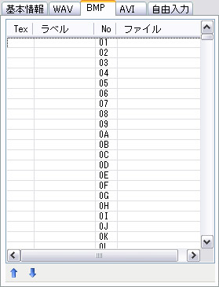

ラベル
No
ファイル
上移動（
下移動（）
| 画面構成 |
|---|
| [BMP]タブ |
BMPタブでは、譜面で使用する画像の一覧（BMPリスト）を管理します。
BMPリストには最大 1295個の画像（BMPセル）を含めることができます。BMPセルは 01 〜 ZZ
（36進数表記）の番号（No）で区別され、１つのラベル名とファイル名を指定することができます。
BMPセルのこれらの値の設定方法については、「画像プロパティ」の項を参照して下さい。
BMPには、サーフェイスとして表示されるものとテクスチャとして表示されるものの２種類があります。それぞれには以下のような違いがあります。
| サーフェイス | テクスチャ | |
| 使用技術 | DirectDraw | Direct3D |
| 色の透過 | 完全な黒（RGB=0,0,0）を透過 | アルファ情報に従う |
| 対応フォーマット | bmp, jpeg, png | RGB24bit＋透過情報付きのpngのみ |
テクスチャを使用すると半透明画像を使うことができますが、サイズやビデオメモリ等に機種依存の制限があり、多用することは推奨されません。

BMPセルをテクスチャとして扱う場合、ここに「○」印が表示されます。
BMPセルに対して付けられている名前（ラベル）を表示します。
DTXファイルでは、ラベル文字列は、対応する #BMP 命令へのコメント文として出力されます。
BMPセルの番号です。36進数表記で 01〜ZZ と表示されます。
譜面上に描かれるチップは、この番号により区別されます。
BMPセルに対応する画像ファイル名です。
作成しているDTXファイルに対する相対パスで表示されます。
現在選択中のBMPセルを、１行上または下へ移動します。
このとき、そのBMPセルの番号（No）は１つ増加または減少し、同時に、譜面上に配置済みのチップの番号も自動的に修正され、セルの移動に追従します。